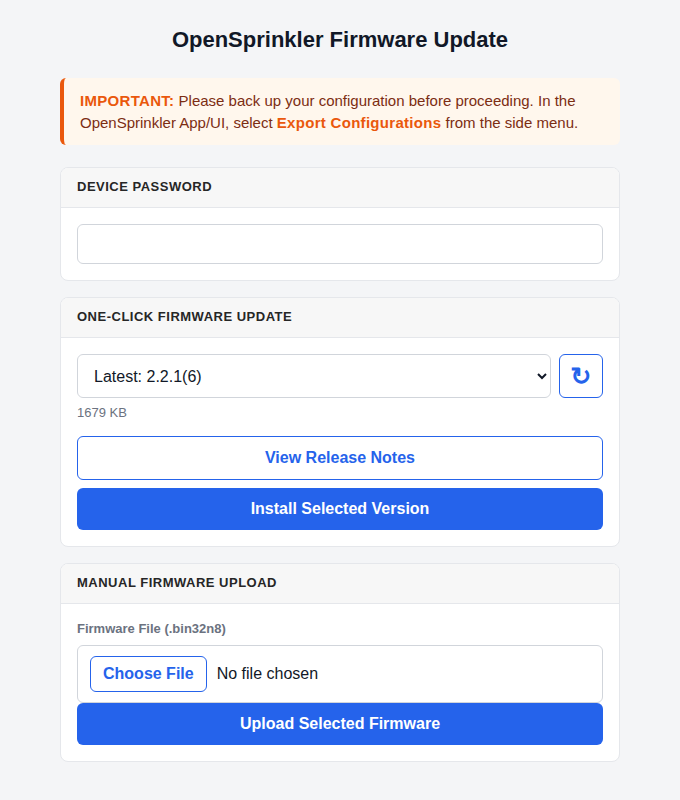

Firmware Update
OpenSprinkler v3 and v4
Back Up Before Updating
Before updating, back up your configurations (Sidebar → Export Configurations) so you can quickly restore programs and settings if needed.
- A Dotted Version Update, e.g. 2.2.0 to 2.2.1, triggers a factory reset and erases all programs, settings, and logs.
- A Build Number Update, e.g. 2.2.1(4) to 2.2.1(6), normally preserves programs and settings. On OpenSprinkler v3, the 2.2.1(6) upgrade removes old sprinkler logs while migrating to the new bounded log format. If needed, download the old log records before firmware update.
One-Click Firmware Update
One-click update is available starting with firmware 2.2.1(6). It automatically checks the official release catalog and installs a compatible firmware version without requiring you to download an image manually. Internet access is required for one-click update.

- Connect to the controller through its local IP address. One-click update is not available through OTC or while the controller is in WiFi AP mode.
- At the homepage, open the side menu and choose Update Firmware; or navigate directly to
http://os-ip/update(whereos-ipis your controller's IP address). - Enter the controller's Device Password.
- Select the desired version under One-Click Firmware Update. Use View Release Notes to review the changes before proceeding.
- Tap Install Selected Version to proceed. Keep the controller powered and the browser open while the firmware is updating. The controller reboots automatically when finished.
A controller running firmware older than 2.2.1(6) must first install a current compatible release through Manual Firmware Upload. It can then use one-click update for future releases.
Manual Upload
If one-click update is unavailable or does not work, use the Manual Firmware Upload panel shown near the bottom of the screenshot above:
- Download the latest compatible image from the OpenSprinkler Compiled Firmware Archive. The latest release is currently firmware 2.2.1(6):
- OpenSprinkler v3 (ESP8266) uses a
.binfile. - OpenSprinkler v4 (ESP32-C6-N8) uses a
.bin32n8file.
- OpenSprinkler v3 (ESP8266) uses a
- Under Manual Firmware Upload, choose the downloaded file, enter the controller's Device Password, and tap Upload Selected Firmware.
- Keep the controller powered and the browser open until the installation finishes and the controller reboots.
Do not install a v3 image on v4, or a v4 image on v3.
Alternative Methods
WiFi AP mode: If your controller is currently in WiFi AP mode, connect your computer or phone to the AP SSID shown on the controller's LCD, then open http://192.168.4.1/update in a browser.
Troubleshooting
- Blank Homepage: If the device homepage is blank or showing an error, and you need to export configuration before updating, see Blank Page Troubleshooting.
- No Available Firmware: Use Manual Upload if your browser cannot reach the firmware release site, or if the controller's firmware predates one-click update support.
- Upload Connection Failure: Make sure port
8080is not blocked by your computer, router, or firewall, then retry the upload. - Controller Stops Responding: Allow several minutes for installation and reboot. If the controller remains unreachable, unplug and reconnect power, then retry the update.
- Update via Wired Ethernet: If your controller is connected via wired Ethernet:
- If it runs firmware
2.2.0or newer, follow the same steps as WiFi. - If it runs
2.1.9or earlier, update must be done in WiFi mode:- Power off the controller.
- Remove the Ethernet module.
- Power on - it will boot into WiFi AP mode.
- Follow the AP-mode update instructions above.
- If it runs firmware
- AP Mode Password Issues on Legacy Firmware: Some older AP-mode update pages do not hash the password before submitting it. If your plaintext password fails, try its MD5 hash instead (e.g. the MD5 hash of
opendoorisa6d82bced638de3def1e9bbb4983225c). -
Firmware Corruption / Device Not Booting:
- OpenSprinkler v3: Re-flash the controller using a USB-Serial Programmer.
- OpenSprinkler v4: Connect its built-in USB-C port directly to a computer. Its built-in USB CDC interface supports firmware recovery without an external USB-Serial Programmer. The same USB connection can provide serial diagnostic messages for firmware debugging.
Contact Support if you need instructions on firmware recovery or USB-based flashing.
OpenSprinkler v2.3
Requires a USB cable for firmware update. Follow the legacy v2.3 Firmware Update Instructions.
OpenSprinkler Pi (OSPi)
Update is done directly on the RPi. Follow the OSPi Firmware Update Instructions.